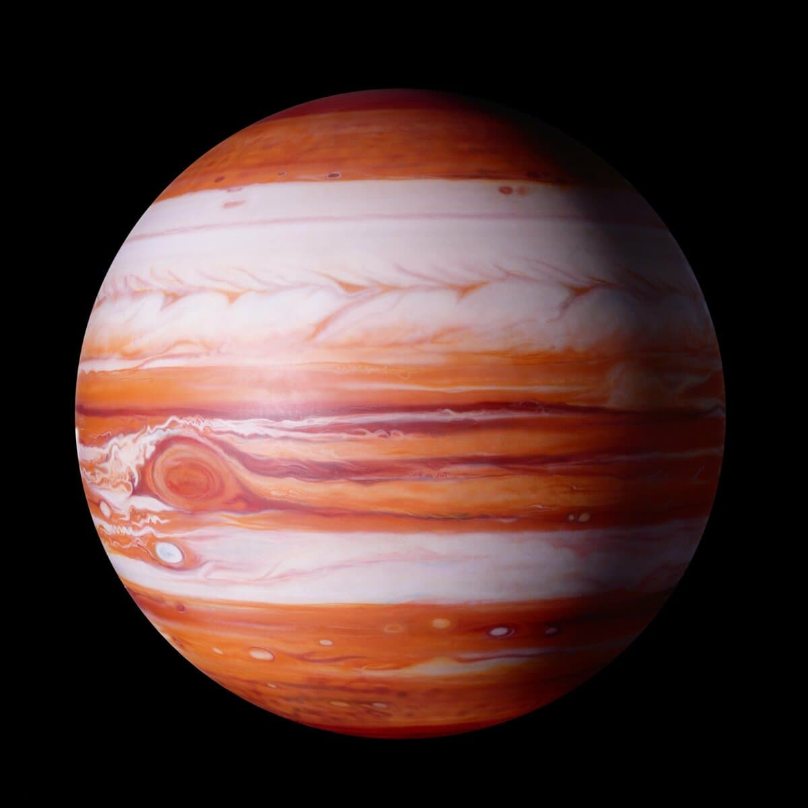

Юпитер
Юпи́тер — крупнейшая планета Солнечной системы, пятая по удалённости от Солнца. Наряду с Сатурном, Ураном и Нептуном, Юпитер классифицируется как газовый гигант.
Планета была известна людям с глубокой древности, что нашло своё отражение в мифологии и религиозных верованиях различных культур: месопотамской, вавилонской, греческой и других. Современное название Юпитера происходит от имени древнеримского верховного бога-громовержца.
Ряд атмосферных явлений на Юпитере: штормы, молнии, полярные сияния, — имеет масштабы, на порядки превосходящие земные. Примечательным образованием в атмосфере является Большое красное пятно — гигантский шторм, известный с XVII века.
Ряд атмосферных явлений на Юпитере: штормы, молнии, полярные сияния, — имеет масштабы, на порядки превосходящие земные. Примечательным образованием в атмосфере является Большое красное пятно — гигантский шторм, известный с XVII века.
Орбита и вращение
При наблюдениях с Земли во время противостояния Юпитер может достигать видимой звёздной величины в −2,94m, это делает его третьим по яркости объектом на ночном небе после Луны и Венеры. При наибольшем удалении видимая величина падает до −1,61m. Расстояние между Юпитером и Землёй меняется в пределах от 588 до 967 млн км.
Атмосфера
Температура в атмосфере растёт немонотонно. В ней, как и на Земле, можно выделить экзосферу, термосферу, стратосферу, тропопаузу, тропосферу. В самых верхних слоях температура велика; по мере продвижения вглубь давление растёт, а температура падает до тропопаузы; начиная с тропопаузы и температура, и давление растут по мере продвижения вглубь. В отличие от Земли, на Юпитере нет мезосферы и соответствующей ей мезопаузы.
Атмосферные явления и феномены
Скорость ветров на Юпитере может превышать 600 км/ч. В отличие от Земли, где циркуляция атмосферы происходит за счёт разницы солнечного нагрева в экваториальных и полярных областях, на Юпитере воздействие солнечной радиации на температурную циркуляцию незначительно; главными движущими силами являются потоки тепла, идущие из центра планеты, и энергия, выделяемая при быстром движении Юпитера вокруг своей оси.
Молнии
В центре вихря давление оказывается более высоким, чем в окружающем районе, а сами ураганы окружены возмущениями с низким давлением. По снимкам, сделанным космическими зондами «Вояджер-1» и «Вояджер-2», было установлено, что в центре таких вихрей наблюдаются колоссальных размеров вспышки молний протяжённостью в тысячи километров.
Магнитное поле и магнитосфера
Первый признак любого магнитного поля — радио- и рентгеновское излучение. О строении магнитного поля можно судить с помощью моделей происходящих процессов. Так было установлено, что магнитное поле Юпитера имеет не только дипольную составляющую, но и квадруполь, октуполь и другие гармоники более высоких порядков. Предполагается, что магнитное поле создаётся динамо-машиной, похожей на земную. Но в отличие от Земли, проводником токов на Юпитере служит слой металлического гелия.
Ось магнитного поля наклонена к оси вращения 10,2 ± 0,6°, почти как и на Земле, однако, в отличие от Земли, в настоящее время северный магнитный полюс расположен рядом с северным географическим, а южный магнитный — с южным географическим.
Полярные сияния
Юпитер демонстрирует яркие устойчивые сияния вокруг обоих полюсов. В отличие от таких же на Земле, которые появляются в периоды повышенной солнечной активности, полярные сияния Юпитера являются постоянными, хотя их интенсивность меняется изо дня в день. Они состоят из трёх главных компонентов: основная и наиболее яркая область сравнительно небольшая (менее 1000 км в ширину), расположена примерно в 16° от магнитных полюсов.
Большое рентгеновское пятно
Орбитальным телескопом «Чандра» в декабре 2000 года на полюсах Юпитера (главным образом, на северном полюсе) обнаружен источник пульсирующего рентгеновского излучения, названный Большим рентгеновским пятном. Причины этого излучения пока представляют загадку.
{kind=link}
{kind=link}
{kind=link}